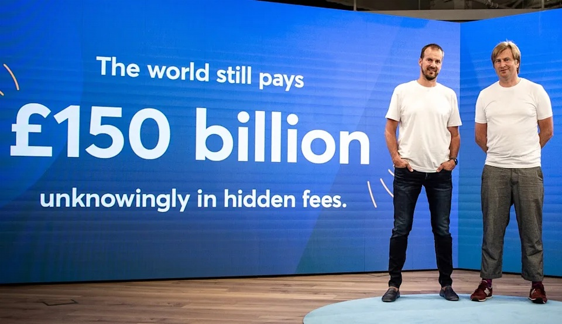
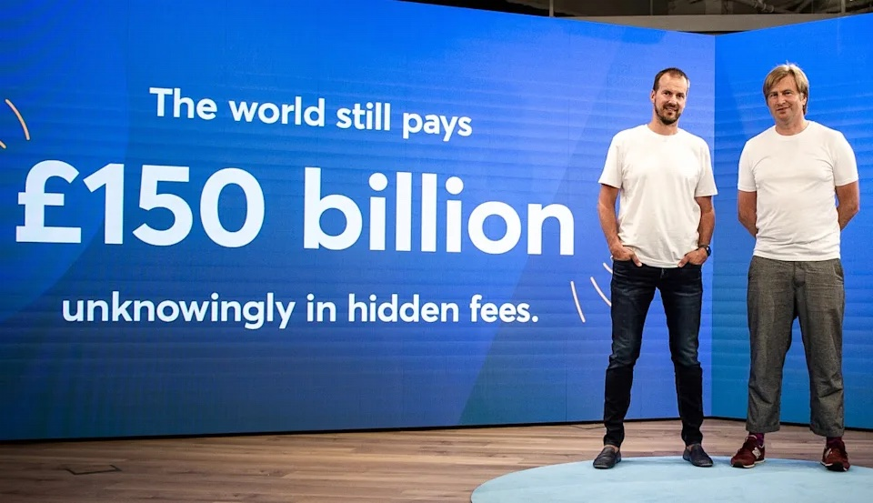

Pengenalan
 

Apa itu Inkubator Startup?
Bisnis rintisan baru berbasis digital, atau yang lebih dikenal dengan startup, terus mengalami perkembangan dan peningkatan jumlah di Indonesia. Kendati telah populer sejak tahun 2010, kini Indonesia diprediksi telah memiliki setidaknya dua ribu perusahaan startup. Seperti yang pernah dilansir media Antara, sulit menentukan jumlah pastinya dikarenakan sifat dari startup yang dinamis dan tersebar di seluruh daerah di Indonesia.
Dinamika jumlah startup di Indonesia tersebut, salah satunya juga dipengaruhi oleh tingginya faktor kegagalan dan kebangkrutan. Banyak startup baru yang gagal berkembang karena perencanaan bisnis yang salah, ketatnya persaingan pasar, serta minimnya suntikan dana dari investor.
Oleh karena itu, banyak yang menganggap bahwa setiap rintisan startup membutuhkan program inkubator bisnis terlebih dahulu, agar bisnis yang dijalankan menjadi lebih mantap dan siap diluncurkan ke tengah masyarakat.
Lalu, apa itu inkubator bisnis?
Secara umum, inkubator bisnis adalah sebuah program yang dijalankan oleh organisasi atau lembaga tertentu guna memberikan treatment khusus berupa arahan, pelatihan, pengembangan, bimbingan, fasilitas, bahkan modal kepada startup baru, dengan tujuan agar startup tersebut menjadi lebih siap untuk diluncurkan.